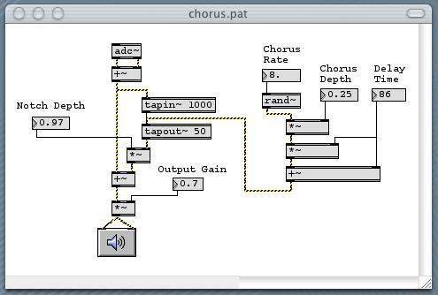

Compared to the RTSFX Rain the samples sounde more granular and dense. This could be managed by increasing the granularity of the RTSFX synthesis .
Suggestion: add a chorus effect to the output with a randomised "rate" and an high value of "depth". See the Max MSP image below for an example.

By comparing the spectrograms it is possible to note that the RTSFX rain is lacking of energy in the mid range.
In order to better simulate the recorded sounds, it would be beneficial to increase the amount of sonic energy in the range 2000 - 8000 Hz .
This could be acheived manipulating the "ambience" paramiter (e.g. add new istance of the process with a pass band filter).
Single drops: compared to the receorded sounds, the synthetised rain is lacking of dripping sounds. It would be beneficial to increase in density and
volume the drop sounds associated to the "drips" parameter . Moreover, it would be good to expand the frequency range of this parameter, this to produce
drops sounds with lower frequencies (up to 200/300 Hz)
Differenciate left and right channels. Two differnt istances of the same model could be sent to the right and left channels, this
would increase the naturalness of the model .
If the presets "RTSFX rain atmoshpere" and "RTSFX rain heavy" can be improoved, the sound "RTSFX rain umbrella" is very similar to the recorded sound.
This preset should be definetly included in the website. This is in line with the sound designers comments: the best setting
founded were those emulating a filtered rain sound (interior viewpoint).
Sound designers comments
The drips have a "metallic" edge to them, which meant I played their level quite low in attempting to configure a "natural" sound.
The best setting I achieved seemed to end up emulating the sound heard from an interior point of view (the most natural sound
I could achieve).
Improve synthesis of drips and reduce the level of "noise" - more definition required to create a more natural sound
The parameters only produce usable sounds in very specific sweet-spots
Over all pitch control would be useful
Dense and heavy rain example, to use as general reference.